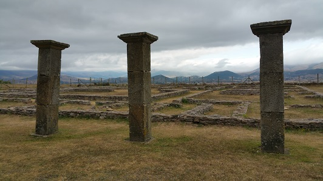
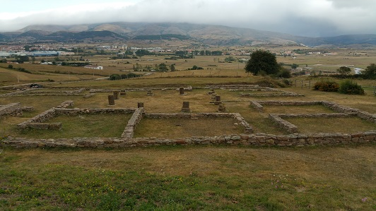

Antigua zona de asentamientos
celtiberos donde Roma fundó esta ciudad al terminar las guerras cántabras.
Fue la ciudad romana más importante de Cantabria cuyas ruinas podemos hoy
admirar en la aldea de Retortillo.
Vivió su época de mayor esplendor durante los siglos I y II, empezando su
declive a mediados del siglo III debido a los estragos que provocó un
incendio. La ciudad contaba con su propio puerto, el de Santander y se le
concedió la categoría de municipio.
Su nombre deriva del celta-romano y significa “ciudad fortificada de
Julio”, aludiendo al primer emperador romano Cayo Julio Cesar Octaviano.
Ver:
Video
|
 |
 |
La visita por las ruinas se puede hacer por zonas:
En la primera zona se encuentra la planta de una vivienda que debió llegar
hasta la actual iglesia. El edificio se construye en torno a un peristilo.
En el lugar donde se levantó luego la iglesia, aparecen los restos de lo
que debió ser un edificio público construido con columnas y donde se ha
hallado una necrópolis. Una tercera zona se encuentra a ambos lados de la
carretera que sube al pueblo; a la derecha se hallan los cimientos de dos
casas, donde se hallaron una sigilata y un pozo donde se encontraron una
estela romana y vasijas de madera. A la izquierda se localizan varias
casas con patios empedrados.
Se ha podido constatar que existen dos niveles romanos de distintas
épocas. También entre los restos de la ciudad han aparecido cerámicas
indígenas de influencia celtíbera.
Junto a las ruinas romanas se puede visitar la Domus de Julióbriga,
proyecto de reproducción de una casa romana. Esta construcción está
compuesta de dos plantas más un pequeño sótano.
|